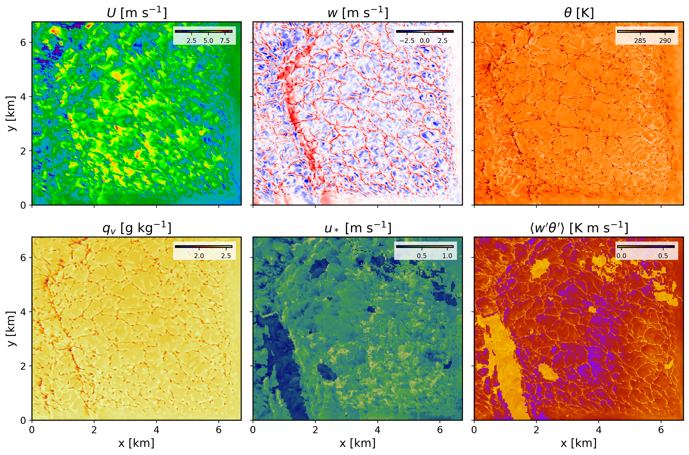

4.2. Running a real-world downscaled simulation with FastEddy
After initial and boundary conditions have been created, a FastEddy simulation can undertaken with intial and boundary forcing from the mesoscale prognostic state fields. The lines below correspond to additions and modifications to the FastEddy parameters file necessary for coupled mesoscale-LES runs (corresponding to the test case from tutorials/examples/Example08_REALCASE_FortCollins.in)
#--GRID
topoFile = ./FortCollinsCO_Topography_448x450.dat
#--Boundary Conditions Set
hydroBCs = 1
ceilingAdvectionBC = 1
hydroBndysFileBase = ./ICBC/FE_Bndys
hydroBndysFileStart = 0
hydroBndysFileEnd = 16
dtBdyPlaneBCs = 300.0
From the parameters above, hydroBCs = 1 is the main option to activate the time-dependent limited area domain boundary condition coupling to a mesoscale model. Note that dtBdyPlaneBCs is the frequency in seconds for boundary conditions to update and it needs to match the value of secInc specified in genicbcs.json. See Running under NSF NCAR HPC for instructions on how to build and run FastEddy on NSF NCAR’s High Performance Computing machines.
#----------: CELL PERTURBATION METHOD ---
cellpertSelector = 1
cellpert_sw2b = 0
cellpert_amp = 2.5
cellpert_nts = 250
cellpert_gppc = 8
cellpert_ndbc = 3
cellpert_kbottom = 1
cellpert_ktop = 40
cellpert_tvcp = 1
cellpert_eckert = 0.05
cellpert_tsfact = 0.333
In order to instigate the rapid establishment of developed turbulence with minimal distance (fetch) from the smooth mesoscale lateral boundary conditions, the Cell Perturbation (CP) method should be used by setting cellpertSelector = 1. Time-varying cell perturbation (TVCP) can be included with cellpert_tvcp = 1. TVCP provides an automatic adjustment with time of the initial and otherwise static cell perturbation parameters (amplitude cellpert_amp, upper bound on vertical levels over which to apply perturbations cellpert_ktop, and perturbation seeding frequency in timesteps cellpert_nts) for real-world cases where atmospheric conditions evolve over time. The internal mechanism implemented for determing time-varying adjustments to the CP parameters uses boundary condition mean state profile statistics and boundary layer height estimation, along with heuristic scaling based on a target perturbation Eckert number (cellpert_eckert), and a prescribed factor for adjusting refresh time for perturbations (cellpert_tsfact). Refer to Muñoz-Esparza et al. (2014 [#f1]_ , 2015 [#f2]_ ) for further details.
The figure below shows several instantaneous fields corresponding to a 1h and 25min hindcast valid at 1825 UTC on Februray 16th 2024. These horizontal contours are from the model’s second vertical level, located at approximately 25 m above ground level.
{kind=link}

Footnotes